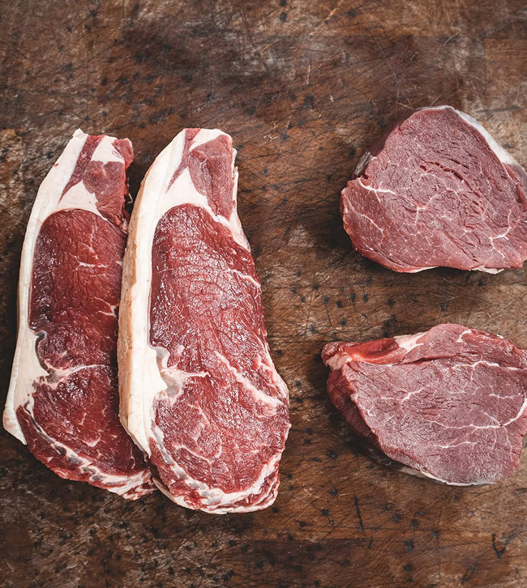
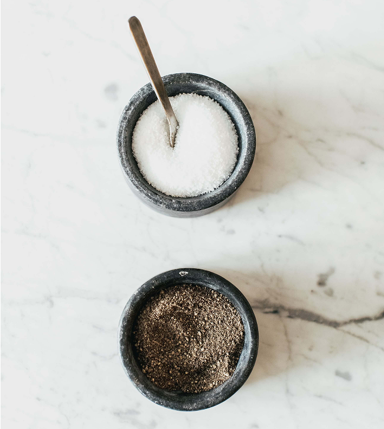

Хотите узнать секрет сочного и ароматного стейка? Этот совет поможет вам приготовить идеальное мясо в домашних условиях.


Для начала выберите качественный кусок говядины — мраморная вырезка или рибай идеально подойдут для стейка. Перед готовкой достаньте мясо из холодильника за 30–40 минут, чтобы оно нагрелось до комнатной температуры. Это поможет стейку прожариться равномерно.
Обсушите мясо бумажным полотенцем, чтобы удалить лишнюю влагу. Немного посолите и поперчите стейк с обеих сторон непосредственно перед жаркой. Используйте крупную соль, она лучше раскрывает вкус мяса.
Разогрейте сковороду (лучше чугунную) на максимальном огне. Когда сковорода станет горячей, добавьте немного масла с высокой температурой дымления, например, подсолнечное или масло гхи. Положите стейк на сковороду и не трогайте его первые 2–3 минуты, чтобы образовалась аппетитная корочка.
Переверните стейк и уменьшите огонь до среднего. Готовьте еще 2–3 минуты для средней прожарки. Если хотите более редкую или более прожаренную степень, отрегулируйте время. В конце добавьте кусочек сливочного масла, чеснок и веточку розмарина на сковороду и поливайте стейк ароматным маслом последние 30 секунд.
После жарки дайте стейку "отдохнуть" 5 минут на тарелке, накрыв его фольгой. Это сохранит все соки внутри.
“Главный секрет сочного стейка — это правильная температура и время отдыха после жарки.”
Подавайте стейк горячим, украсив свежей зеленью или гарниром из запеченных овощей. Попробуйте дополнить блюдо легким соусом, например, сливочным или чесночным. Приятного аппетита!
Вы также можете посмотреть видео!